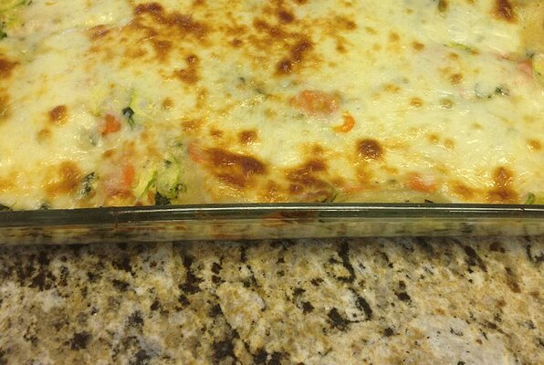

Lasagna

Debbie's Vegetable Lasagna
Make this recipe ahead of time and store in refrigerator. Also, freezes well for a healthy instant dinner on a busy night!
- Noodles
- Margarine
- Flour
- Salt
- Pepper
- Milk
- Vegetable broth
- White wine
- Parmesan
- Ricotta
- Egg
- Olive oil
- Carrots
- Zucchini
- Spinach
- Mozzarella
- Boil water and cook noodles
- Preheat oven
- Create a rhou over low heat, and add wine and parmesan
- Combine ricotta, egg, and egg white in a bowl
- Saute vegatbles until tender
- Create 3 layers containing 1/3 of each ingredient and top with mozzarella
- Bake until cheese is brown and bubbling